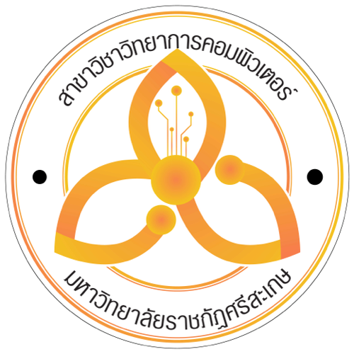

"ก้าวสู่อนาคตทางเทคโนโลยี สร้างสรรค์ซอฟต์แวร์แห่งนวัตกรรม" หลักสูตรที่มุ่งผลิตนักวิทยาการคอมพิวเตอร์ โปรแกรมเมอร์ Full-Stack และนักวิเคราะห์ข้อมูล เพื่อเข้าสู่ตลาดงานยุคดิจิทัลระดับสากล
ระยะเวลาหลักสูตร
หน่วยกิตขั้นต่ำ
โอกาสมีงานทำ
จำนวนศิษย์เก่าไอที

โครงสร้างเชิงเป้าหมาย ผลลัพธ์การเรียนรู้ และทิศทางเพื่อสร้างบัณฑิตที่ตอบโจทย์อนาคต
ปรัชญานี้สะท้อนอัตลักษณ์สำคัญ 3 ด้าน ได้แก่ ความเชี่ยวชาญในวิชาชีพคอมพิวเตอร์ การมีคุณธรรมจริยธรรมวิชาชีพ และการพัฒนานวัตกรรมนำไปใช้พัฒนาท้องถิ่น ซึ่งเชื่อมโยงโดยตรงกับวิสัยทัศน์พันธกิจเพื่อการร่วมขับเคลื่อนสังคมของมหาวิทยาลัยราชภัฏ
ฝึกฝนทักษะการเขียนโปรแกรม โครงสร้างข้อมูล อัลกอริทึม และระบบฐานข้อมูลระดับเข้มข้น
ยึดมั่นในจรรยาบรรณวิชาชีพไอที เคารพกฎหมายทรัพย์สินทางปัญญา และ พ.ร.บ. คอมพิวเตอร์
สร้างสรรค์โครงงานและแอปพลิเคชันที่ช่วยแก้ปัญหาและยกระดับเศรษฐกิจชุมชนจริง
เตรียมพร้อมทักษะแห่งอนาคต ผสานทฤษฎีเทคโนโลยีขั้นสูงเข้ากับการลงมือปฏิบัติการจริงในห้องแล็บที่ทันสมัย
โอกาสกว้างขวางในตลาดงานสายเทคโนโลยี เช่น Full-Stack Developer, AI Engineer, Data Scientist และ Cloud Architect
สายอาชีพดิจิทัลและเทคโนโลยีมีอัตราเงินเดือนเริ่มต้นและอัตราการเติบโตเฉลี่ยที่สูงกว่าวิชาชีพอื่นอย่างเด่นชัด มีตำแหน่งงานรองรับทั่วประเทศ
สามารถเลือกรูปแบบทำงานออนไลน์จากทุกมุมโลก (Work from Anywhere) ประกอบอาชีพฟรีแลนซ์ หรือก้าวสู่นักธุรกิจสตาร์ทอัปไอที
ออกแบบหลักสูตรให้ครอบคลุม 3 ด้านหลักที่ตลาดแรงงานไอทีระดับสากลต้องการสูงสุด
เรียนรู้การออกแบบ ติดตั้ง และบำรุงรักษาระบบเครือข่าย ทั้งแบบสายและไร้สายเพื่อการสื่อสารในองค์กร
การป้องกันและควบคุมความปลอดภัยข้อมูล การเข้ารหัสลับ และการตรวจจับผู้บุกรุกในระบบสารสนเทศ
การตรวจสอบและวิเคราะห์ข้อมูลที่ถูกโจมตีทางไซเบอร์ การสืบค้นพยานหลักฐานดิจิทัล และกฎหมายไอที
การออกแบบ ติดตั้ง และบำรุงรักษาระบบฐานข้อมูล รวมถึง SQL ซึ่งเป็นภาษาคิวรีสำหรับฐานข้อมูล
ตัวอย่างตารางวิชาหลักในการเรียนในแต่ละชั้นปีการศึกษา (หน่วยกิตรวมไม่น้อยกว่า 133 หน่วยกิต)
| รหัสวิชา | ชื่อรายวิชา | หมวดหมู่ |
|---|---|---|
| CS101 | พื้นฐานวิทยาการคอมพิวเตอร์ | วิชาเฉพาะสาขา |
| CS102 | การเขียนโปรแกรมเบื้องต้น (Python) | วิชาเฉพาะสาขา |
| MA111 | คณิตศาสตร์ดิสครีต | วิชาเฉพาะสาขา |
| GE101 | ภาษาอังกฤษเพื่อการสื่อสาร | วิชาศึกษาทั่วไป |
| รหัสวิชา | ชื่อรายวิชา | หมวดหมู่ |
|---|---|---|
| CS103 | การเขียนโปรแกรมเชิงวัตถุ (Java) | วิชาเฉพาะสาขา |
| CS104 | โครงสร้างข้อมูลและอัลกอริทึม | วิชาเฉพาะสาขา |
| MA112 | สถิติและคณิตศาสตร์สัญกรณ์ | วิชาเฉพาะสาขา |
| GE102 | ทักษะชีวิตและความเป็นพลเมือง | วิชาศึกษาทั่วไป |
| รหัสวิชา | ชื่อรายวิชา | หมวดหมู่ |
|---|---|---|
| CS201 | สถาปัตยกรรมคอมพิวเตอร์และระบบปฏิบัติการ | วิชาเฉพาะสาขา |
| CS202 | ระบบฐานข้อมูลและการออกแบบ | วิชาเฉพาะสาขา |
| CS203 | วิศวกรรมซอฟต์แวร์เบื้องต้น | วิชาเฉพาะสาขา |
| CS204 | โครงข่ายคอมพิวเตอร์และการสื่อสาร | วิชาเฉพาะสาขา |
| รหัสวิชา | ชื่อรายวิชา | หมวดหมู่ |
|---|---|---|
| CS205 | การพัฒนาเว็บแอปพลิเคชัน | วิชาเฉพาะสาขา |
| CS206 | การวิเคราะห์และออกแบบระบบเชิงวัตถุ | วิชาเฉพาะสาขา |
| CS207 | ความมั่นคงปลอดภัยสารสนเทศพื้นฐาน | วิชาเฉพาะสาขา |
| CS208 | คณิตศาสตร์และเครื่องมือสถิติสำหรับ AI | วิชาเฉพาะสาขา |
รวบรวมเอกสารหลักสูตร คู่มือแนะนำการขึ้นทะเบียน และข้อมูลสำคัญสำหรับนักศึกษา
รายละเอียดวิชาเรียน โครงสร้างจำนวนหน่วยกิตทั้งหมด และแผนการเรียนตลอด 4 ปี (หลักสูตรปรับปรุง พ.ศ. 2568)
คู่มือระบุการเตรียมเอกสารสำหรับการรับนักศึกษาใหม่ ทุกรอบ TCAS ของมหาวิทยาลัยราชภัฏศรีสะเกษ
คณาจารย์ผู้ทรงคุณวุฒิและเชี่ยวชาญเฉพาะทาง ร่วมขับเคลื่อนการจัดการเรียนการสอนและการวิจัย
มีข้อสงสัยเกี่ยวกับหลักสูตร โควตาการรับสมัคร หรือสอบถามรายละเอียดเพิ่มเติม ได้ตลอดเวลา
043-009700 ต่อ 50528
สายด่วน: 084-298-2456
สาขาวิชาฯ ตั้งอยู่ที่ชั้น 5 อาคารสำนักงานคณบดี คณะศิลปศาสตร์และวิทยาศาสตร์ (LASC)
มรภ.ศรีสะเกษ ถ.ไทยพันทา อ.เมือง จ.ศรีสะเกษ
สอบถามรายละเอียดการรับสมัคร ทุนการศึกษา และหลักสูตรได้คำตอบรวดเร็วทันใจตลอด 24 ชั่วโมง
เพิ่มเพื่อนใน LINEติดตามข่าวสารกิจกรรม ผลงานนักศึกษา ทุนการศึกษา และภาพบรรยากาศการเรียนการสอนอย่างเป็นกันเอง
ติดตามแฟนเพจชมคลิปสั้น แนะนำกิจกรรม ผลงานโครงงานของรุ่นพี่ และบรรยากาศในสาขาวิชาฯ สนุกและเข้าใจง่าย
ชมคลิปบน TikTok